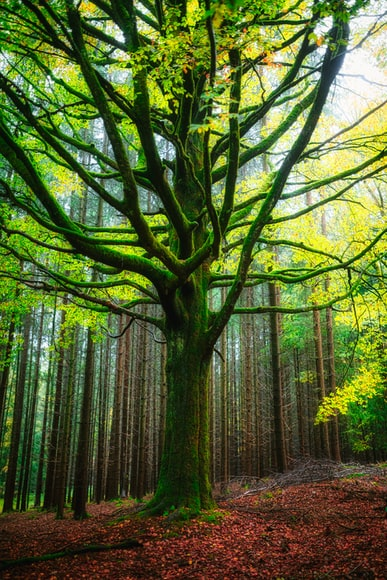
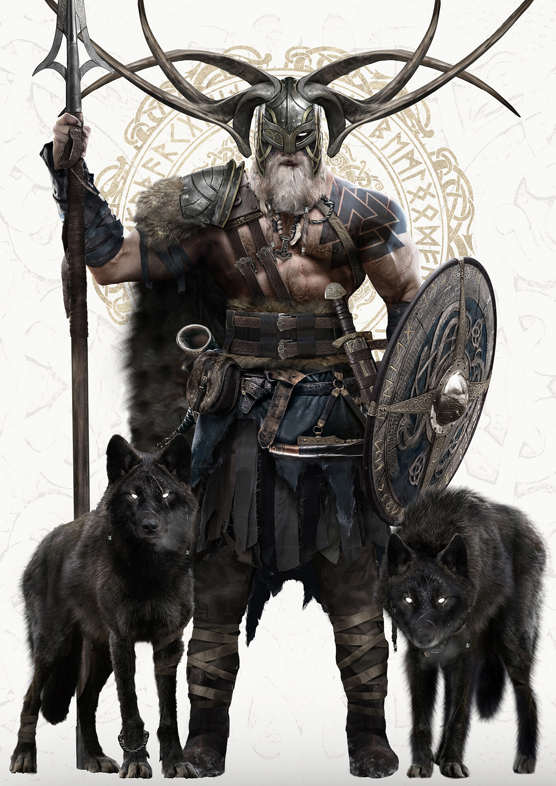
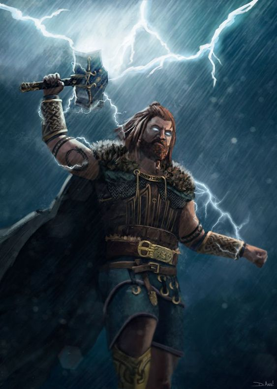
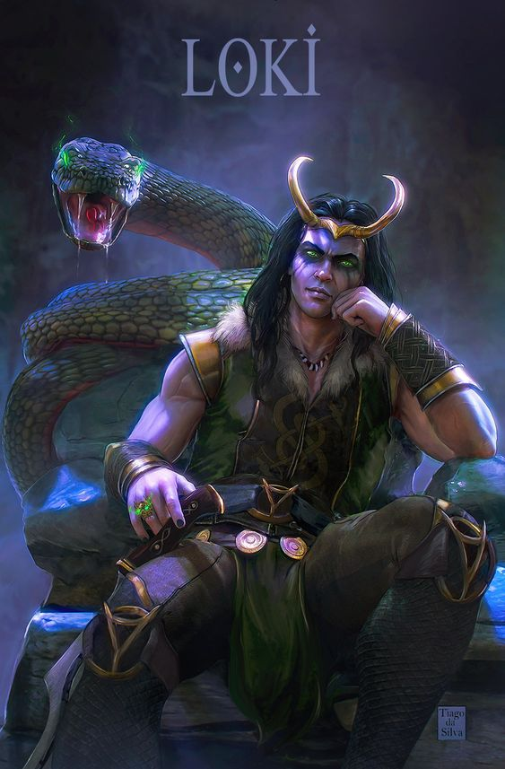

Odin Tree
Welcome To The Tree
At the centre of Norse mythology is Yggdrasil, the Tree of Life. The name probably means Horse of Odin, king of the Norse gods, in Old Norse, which is the equivalent of gallows of Odin. This mighty tree held together the nine worlds of Norse mythology and connected the Vikings living in the world of men with the fantastic worlds of the gods and giants. In Norse mythology Yggdrasil is described as an enormous, ever-green ash tree that cradles the nine realms of Viking myth in its roots and branches, connecting and nourishing all things.
A mythical and mighty ash tree, Yggdrasil gave structure and definition to the cosmos. According to Norse mythology, all Nine Realms of the cosmos either hung from its branches, or else grew from its massive roots. As the source of cosmic structure, Yggdrasil commanded enormous respect. The Norse revered it as the giver and taker of life and order. Yggdrasil's fate was synonymous with that of the cosmos itself. Prophecy held that Ragnarok would be preceded by the trembling of Yggdrasil, an omen of the chaos to come.
Sign up

A Brief Introduction To Gods Of Asgard
Norse mythology is the compilation of the stories, religious practices, and myths of the ancient Nordic people. These texts span a period of time beginning in Norse paganism and continuing through the medieval era, during which most of Scandinavia converted to Christianity. The Nine Realms, or worlds, were the geographical building blocks of Norse cosmology. Each realm was located on Yggdrasil, the world tree, and only the most intrepid gods and mortals could travel between them.
Acording to Norse cosmology, the known universe was composed of Nine Realms. These realms were Asgard, the near-perfect home of the Aesir deities; Jotunheim, the fallen world of the monstrous jötunn; Midgard, the land of humans; Alfheim, home of the elves; Hel, a resting place for the dead; Vanaheim, the world of the magical Vanir deities; Nidavellir, the subterranean realm of the dwarves; Niflheim, a frigid land of ice and snow; and Muspelheim, a realm of heat and flame.
The Nine Realms hung on the branches, or else grew from the roots and bole of Yggdrasil, the world tree, which gave structure and form to the cosmos. Their position within Yggdrasil determined both their core characteristics and their connections to other realms. Though the realms were distinct from one another, their boundaries were surprisingly porous. Intrepid travelers, both mortal and divine, could and did traverse the liminal spaces between worlds. Asgard and Midgard were connected via the great rainbow bridge known as the Bifrost, making it possible for deities to influence the humans who adored and abhorred them in equal measure.
The realm of the Aesir gods, Asgard approached the civilized perfection of the wise and powerful gods who ruled it. As king of the gods, Odin held court in Valhalla, the realm’s great hall. Valhalla served as the resting place for the souls of half of all fallen warriors. The other half went to Folkvangr, a field or meadow in Asgard, where Freya kept her abode. Despite its near perfect state, Asgard still saw trouble from time to time. Much of Asgard was damaged or destroyed in the Aesir-Vanir War. Even in peaceful times, enemies continued to penetrate its boundaries and cause mischief.
The power of Asgard extended throughout the Nine Realms. A central tenet of Norse religion was the notion that the Asgardians cared for—and sometimes antagonized—the people of Midgard. The rainbow Bifrost connected the two realms, allowing gods such as Thor and Loki easy access to the mortal realm. The Asgardians also contended with the monstrous inhabitants of Jotunheim, whom they loathed for being antithetical to them in every way. Incursions into Jotunheim appeared frequently in Norse myth, and almost always ended in Asgardian victory.

Odin the “All-Father,” chief of the Norse gods and leader of the powerful Aesir was unmatched in magic, cunning, and battle prowess. He would often be accompanied by his familiars—the wolves Geri and Freki, and ravens Huminn and Muninn—and rode an eight-legged horse named Sleipnir. He sacrificed his own eye in his quest for knowledge.

A paragon of strength and masculine virility, the storm god Thor was the fiercest of Norse deities. He was the son of Odin, the “all-father,” and a member of the Aesir tribe of deities. Among his many abilities, Thor commanded storms and rain, and brought lightning and thunder. Wielding his powerful hammer Mjölnir, he defeated many monsters and jötnar in service of the Aesir.

The great trickster god of the Norse pantheon, Loki was a devious deity known for his many schemes and deceptions. A shapeshifter, Loki's forms were as varied as the motives for his mischief, which included wealth, women, wisdom, and the sheer pleasure of his knavery. With Loki, appearances were never quite what they seemed.
" Against the serpent goes Othin's son.
In anger smites the warder of earth,—
Forth from their homes must all men flee;-
Nine paces fares the son of Fjorgyn,
And, slain by the serpent, fearless he sinks."
To Support Us
To get the latest mythlogical story follow us on the social platforms and donate
Donate